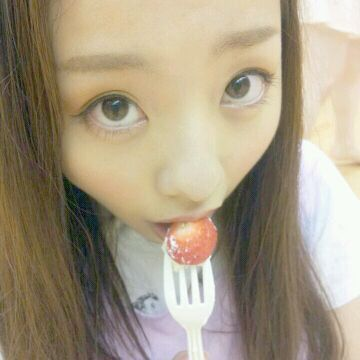
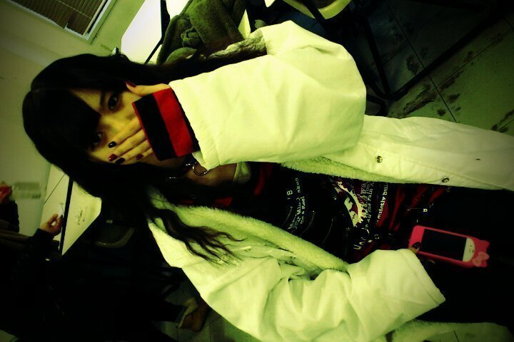

ホホーーい。
ろってぃで-す =・ε・=

今日は 朝早くから
〜乃木坂浪漫〜の
撮影をやってきました。
めちゃくちゃ楽しかったなぁ〜
(*・ω・`*))
楽しみだ楽しみだ ♪))
そしてそしてっ!!
あすか wwww ♪ ♪ ♪
8/10 ☆
14さいのお誕生
おめでとおwwwwっ)))
あすか♪は
笑顔がくしゃっ><))
ってなってすっごい可愛くて
元気ない時でも
クレープ食べたら元気になって
まだ中学生らしい所があって
すごい可愛い半面
すっごいしっかりしてて
自分に厳しくする
そんなあすか♪が
大好きだゾーー☆
よくレッスンの時
鏡の前で座って
まひろの方見て
『ろってぃ-かわぃい〜』
って言ってくれるんだけど
その百倍 キミかわいいよ(^-^)笑
ありがとね*^^*
狼のPV撮影の時のあすか(^ー^)

懐かしいでしょ?
顔見えへんっ`・ω
...
まんねんのいじりだね*^^*
かわいい。
あとあとっ,
洗剤どーにかこーにかして
げっとーーー☆★☆
これでたまりにたまった子たちを
洗濯できるわ(^.^)
おほほほほ*・ω・*
以上っ))
ろってぃでしたぁ
のし〜*^ω^*